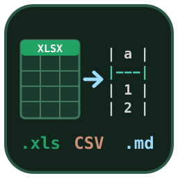

Excel to Markdown
Excel to Markdown: Paste & CSV, a VS Code extension by Zovo
Paste cells copied from Excel, Google Sheets, Numbers or LibreOffice into a Markdown file as a clean Markdown table, and turn CSV, TSV and workbook sheets into Markdown tables inside VS Code.
Free, MIT license. Needs VS Code 1.90.0 or newer. Extension ID zovo.zovo-excel-to-markdown, version 0.1.2.

Free, with no limit and no sign-in:
- Paste as Markdown Table from Excel, Google Sheets, Numbers or LibreOffice Calc. Normal paste is never changed.
- Convert CSV or TSV to a Markdown table and back, and line up the columns of an existing table.
- Open
.xlsx,.xls,.odsand.csvfiles to copy a sheet or a range such asA1:D20as Markdown, HTML, AsciiDoc, Jira, CSV or TSV. - Offline: no network calls, no telemetry.
Zovo Pro: USD 19 once, for the Pro tools in every Zovo extension. Here it adds Convert Workbooks to Markdown Files, Save Markdown Tables as an Excel File and Keep Excel Formats, Links and Merged Cells, with 3 free tries each on your computer. They are in the Pro tools row of the spreadsheet preview and in the Explorer right-click menu ("Zovo Pro: ...").
Questions people ask
Is Excel to Markdown free?
Yes. Excel to Markdown is free and MIT licensed.
How do I install Excel to Markdown?
Click "Install in VS Code" above, or search for zovo.zovo-excel-to-markdown in the Extensions view.
Paste from Excel or Google Sheets
- Copy cells in your spreadsheet.
- In a Markdown file, right-click and pick Paste as Markdown Table (or run it from the Command Palette).
What you get:
- The first row becomes the header (or add an empty header with
excelToMarkdown.headerRow). - Columns that hold only numbers are right-aligned, including
1,250,12.50,12%,(35)and amounts with a currency sign. - Pipes (
|) and backslashes are escaped, so a cell likeA|Bstays in one column. - A line break inside a cell becomes
<br>. Cells with tabs or line breaks, which Excel and Google Sheets wrap in quotes, come out right. <and>in cells are written as<and>, so HTML in a cell shows as text when the Markdown is rendered.- Columns line up in the editor, also with Chinese, Japanese and Korean text and emoji, which take two columns each.
- Ragged rows are filled with empty cells.
Normal paste (Cmd+V or Ctrl+V) is never changed. To paste tables with a key of your own, run Excel to Markdown: Add a keybinding for Paste as Markdown Table and pick, for example, Cmd+Alt+V or Ctrl+Alt+V.
Copy a sheet or range from a workbook
Right-click an .xlsx, .xlsm, .xlsb, .xls, .ods, .csv or .tsv file and pick Open Spreadsheet as Markdown Table. Choose the sheet, type a range (A1:D20, B:D, 2:10) or leave it empty for the whole sheet, then Copy or Insert at cursor. The same table can also be written as HTML, AsciiDoc, Jira, CSV or TSV.
Cells come as they are stored: plain numbers and dates in ISO form (2026-01-05).

Convert and format tables
| Command | What it does |
|---|---|
| Convert CSV/TSV to Markdown Table | The selected CSV or TSV text becomes a Markdown table. In a .csv file with nothing selected, the whole file opens as a table in a new tab |
| Convert Markdown Table to CSV / to TSV | The table under the cursor becomes CSV or TSV again (<br> back to a line break, escapes undone) |
| Format Markdown Table | Pads the table under the cursor so the pipes line up, and keeps its alignment row |

Free and Pro
Everything above is free, with no limit and no sign-in. Three Zovo Pro tools save time on bigger jobs. Each has 3 free tries on your computer, and a try counts only when the tool gives you a result.
| Tool | Free | Zovo Pro |
|---|---|---|
| Paste as Markdown table, CSV/TSV to Markdown and back, format tables, workbook preview with sheet and range, HTML, AsciiDoc, Jira | yes | yes |
Convert whole workbooks to Markdown files: every sheet of a workbook, or every workbook in a folder, to .md files with one heading per sheet | 3 tries | yes |
Save Markdown tables as an Excel file: every table of a document in one .xlsx, one sheet per table named after the heading above it, numbers stored as numbers | 3 tries | yes |
Keep Excel formats, links and merged cells: cells as Excel shows them (1,234.50, 25%, 1 Jan 2024), hyperlinks as Markdown links, merged cells filled into every cell they cover | 3 tries | yes |
Zovo Pro is USD 19 once and turns on the Pro tools in every Zovo extension. Nothing about Pro shows when you open a file or paste a table; it only comes up when you click one of the three tools. To hide them, set excelToMarkdown.showProTools to false.
Settings
| Setting | Default | What it does |
|---|---|---|
excelToMarkdown.alignment | auto | auto (numbers right), left, center, right or none |
excelToMarkdown.headerRow | first | first row as header, or an empty header row |
excelToMarkdown.maxColumnWidth | 40 | Cells wider than this are not padded, so one long cell does not stretch every row. 0 pads every cell |
excelToMarkdown.compact | false | Tables without padding |
excelToMarkdown.escapeHtml | true | Write < and > as < and > |
excelToMarkdown.escapeMarkdown | false | Also escape * _ ` ` [ ] # ~` |
excelToMarkdown.lineBreaks | <br> | Line breaks in cells as <br> or a space |
Safe with any file
- Workbooks are read in a separate worker thread with a time and memory limit. A broken or hostile file gives a message; it cannot freeze VS Code.
- Zip bombs are refused before the workbook is read: the number of parts and the unpacked size are capped, and a part that unpacks to more than it claims is rejected.
- Pastes up to 10 MB, 200,000 rows and 2,000 columns are converted; anything larger gives a message instead of a frozen editor.
- No network and no telemetry. The preview gets every cell from VS Code, not from the internet. The extension reads the clipboard only when you run Paste as Markdown Table, and writes it only when you click Copy.
Commands
| Command | Where |
|---|---|
| Excel to Markdown: Paste as Markdown Table | Command Palette, right-click in a Markdown file |
| Excel to Markdown: Convert CSV/TSV to Markdown Table | Command Palette |
| Excel to Markdown: Convert Markdown Table to CSV / to TSV | Command Palette |
| Excel to Markdown: Format Markdown Table | Command Palette, right-click in a Markdown file |
| Excel to Markdown: Open Spreadsheet as Markdown Table | Command Palette, right-click a spreadsheet in the Explorer |
| Excel to Markdown: Open the sample workbook | Command Palette, walkthrough |
| Excel to Markdown: Convert workbooks to Markdown files (Pro) | Command Palette, right-click a workbook or folder, the preview's Pro tools row |
| Excel to Markdown: Save Markdown tables as an Excel .xlsx file (Pro) | Command Palette, right-click a Markdown file, the preview's Pro tools row |
| Excel to Markdown: Keep Excel formats, links and merged cells in the preview (Pro) | Command Palette, right-click a workbook, the preview's Pro tools row |
Third-party code
Workbooks are read and written with SheetJS Community Edition 0.20.3 (Apache License 2.0), bundled in the extension. See THIRD-PARTY-NOTICES.txt.
License
MIT
Guides
- Turn Excel cells, a sheet or a CSV file into a Markdown table in VS Code
- Line up the columns of a Markdown table in VS Code
- Convert a Markdown table back to CSV or Excel
Install Excel to Markdown
Click the button to open VS Code and install it, or press Ctrl+P (Cmd+P on macOS) in VS Code and run ext install zovo.zovo-excel-to-markdown.
Free, MIT license. Needs VS Code 1.90.0 or newer. Extension ID zovo.zovo-excel-to-markdown, version 0.1.2.
Source code and issues are on GitHub.
Zovo Pro and support
Zovo Pro: USD 19 once, every Zovo viewer. It turns on the Pro tools in this extension and in the other Zovo extensions you use. The free features stay free.
After a card payment your license key shows on the next page. Paste it with the command "Zovo Pro: Enter a key".
You can also support the work with no Pro:
Need your format supported?
Open a format request with a sample file, and I reply there whether it can be done. For USD 299 once, through this GitHub Sponsors tier, I add your file format or a missing feature to this extension, with tests, within 7 days.